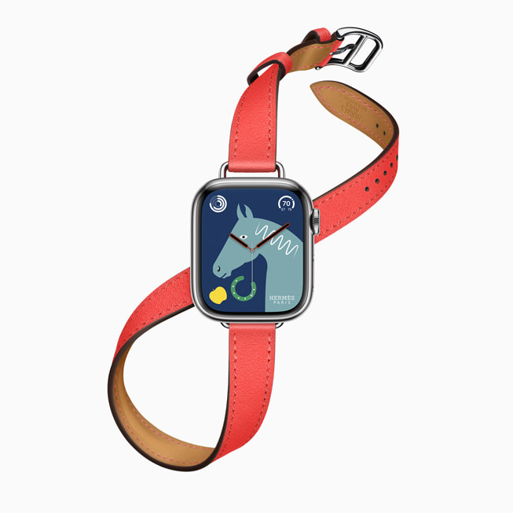

Apple 描述马匹在垂腕时睡去，抬腕时恢复活动。
下方的文件数包括本地化资源。固件名称键能确认包的归属；组件的圆屏点击边界、亮屏过渡与 AOD 对照均待设备验证。
原始包 已解析属性表 Mach-O 方法与成员 ARM64 汇编 解出的图集
.strings × 132 .plist × 2 .car × 1 无扩展名 × 1
原始包 已解析属性表 Mach-O 方法与成员 ARM64 汇编 解出的图集
.strings × 132 .plist × 2 .car × 1 无扩展名 × 1
原始包 已解析属性表 Mach-O 方法与成员 ARM64 汇编 解出的图集
.strings × 132 .mov × 16 .plist × 2 .car × 1 无扩展名 × 1
NTKSecretariatFaceBundle.bundleSECRETARIAT_FACE_DESCRIPTIONcolor 3color 1color 4color 2色组与设备条件 Zeus-Secretariat.color.plist 共享色组与默认值
-[NTKSecretariatFaceView tritium_prepareForTransitionToTritiumOnAnimated:withCompletion:];-[NTKSecretariatFaceView tritium_transitionToTritiumOnWithProgress:];-[NTKSecretariatFaceView tritium_createFaceAnimator];-[NTKSecretariatFaceView _updateColorForTritiumWithProgress:];-[NTKSecretariatFaceView tritium_transitionToTritiumOffWithProgress:];-[NTKSecretariatColorPalette secondHand];-[NTKSecretariatColorPalette hourMinuteHandInlay];-[NTKSecretariatColorPalette hourMinuteHandStroke];-[NTKSecretariatFaceView tritium_prepareForTransitionToTritiumOnAnimated:withCompletion:];-[NTKSecretariatFaceView _applyTransitionFraction:fromOption:toOption:forCustomEditMode:slot:];-[NTKSecretariatFaceView tritium_transitionToTritiumOnWithProgress:];-[NTKSecretariatFaceView tritium_createFaceAnimator];-[NTKSecretariatFaceView _applyTransitionFraction:fromComplication:toComplication:slot:];-[NTKSecretariatFaceView _shouldAnimateComplicationsOnTap];-[NTKSecretariatFaceView tritium_transitionToTritiumOffWithProgress:];-[NTKSecretariatFaceView _configureForTransitionFraction:fromEditMode:toEditMode:];-[NTKSecretariatFaceView screenDidTurnOffAnimated:];-[NTKSecretariatColorPalette background];-[NTKSecretariatColorPalette logo];-[NTKSecretariatColorPalette complication];-[NTKSecretariatColorPalette secondHand];-[NTKSecretariatColorPalette hourMinuteHandInlay];-[NTKSecretariatColorPalette hourMinuteHandStroke];-[NTKSecretariatColorPalette alternateComplication];-[NTKSecretariatColorPalette apple];-[NTKSecretariatColorPalette horse];-[NTKSecretariatColorPalette horseEye];-[NTKSecretariatColorPalette horseHair];-[NTKSecretariatColorPalette horseshoe];-[NTKSecretariatColorPalette horseshoeHoles];-[NTKSecretariatBackgroundView setPalette:];-[NTKSecretariatBackgroundView _updateLayout];-[NTKSecretariatBackgroundView palette];-[NTKSecretariatColorPalette _background];-[NTKSecretariatColorPalette swatch];-[NTKSecretariatColorPalette _horseEye];+[NTKSecretariatFace _complicationSlotDescriptors];+[NTKSecretariatFace _richComplicationSlotsForDevice:];+[NTKSecretariatFace _orderedComplicationSlots];+[NTKSecretariatFace _defaultSelectedComplicationSlotForDevice:];-[NTKSecretariatFace _numberOfOptionsForCustomEditMode:slot:];-[NTKSecretariatFace _indexOfOption:forCustomEditMode:slot:];-[NTKSecretariatFace _optionAtIndex:forCustomEditMode:slot:];-[NTKSecretariatFaceView createFaceColorPalette];-[NTKSecretariatFaceView _applyTransitionFraction:fromOption:toOption:forCustomEditMode:slot:];-[NTKSecretariatFaceView layoutSubviews];-[NTKSecretariatFaceView _applyBreathingFraction:forCustomEditMode:slot:];-[NTKSecretariatFaceView _updateViewColorsWithPalette:];-[NTKSecretariatFaceView _applyOption:forCustomEditMode:slot:];-[NTKSecretariatFaceView _applyTransitionFraction:fromComplication:toComplication:slot:];-[NTKSecretariatFaceView _updateColorForTritiumWithProgress:];-[NTKSecretariatFaceView _keylineStyleForComplicationSlot:];-[NTKSecretariatFaceView _shouldAnimateComplicationsOnTap];-[NTKSecretariatFaceView _configureComplicationView:forSlot:];-[NTKSecretariatFaceView colorPalette];-[NTKSecretariatFaceView _loadLayoutRules];-[NTKSecretariatFaceView _newLegacyViewForComplication:family:slot:];-[NTKSecretariatFaceView _applyRubberBandingFraction:forCustomEditMode:slot:];-[NTKSecretariatFaceView _updateComplicationColorForPalette:slot:view:];-[NTKSecretariatFaceView _showStaticHorseImageWithBackgroundColor:];